Introduction
Ascape is an innovative tool for developing and exploring general-purpose agent-based models. It is designed to be flexible and powerful, but also approachable, easy to use and expressive. Models can be developed in Ascape using far less code than in other tools. Ascape models are easier to explore, and profound changes to the models can be made with minimal code changes. Ascape offers a broad array of modeling and visualization tools.A high-level framework supports complex model design, while end-user tools make it possible for non-programmers to explore many aspects of model dynamics. Ascape is written entirely in Java, and should run on any Java-enabled platform. Whether you are involved in academia, industry, or government, we hope that you will find that Ascape enables your efforts to exploit the profound insights agent-based models make possible.
Ascape is released under a BSD standard open source license and thus is free to use and redistribute. The Ascape distribution includes a number of other Open Source libraries; please see the licenses directory and individual jars for more information.
Ascape is research oriented software; while it is quite mature,
apis, distribution, may continue may change over time. Direct support is
not provided; forums provide a much better venue for sharing information
and make the most efficient use of limited resources. For support,
comments, or discussion of technical and general modeling issues, please
use the Ascape forum at ascape.sourceforge.org. We welcome and encourage
your feedback, positive and negative. User contributions, ideas, and
feature requests are also most welcome. (See
below.)
Acknowledgments
First, thanks to all the users of Ascape who have provided so much valuable feedback over the years. Your enthusiasm is the primary motivation for the continuing improvement of Ascape.Design and Development: Miles Parker
Development: Mario Inchiosa, Josh Miller
Models, Extensions and QA: Alan Lockard, Jason Harburger, Jim Girard, Roger Critchlow, Carl Tollander, Lisa Stuart, and many others...
Profound thanks to Joshua Epstein and Robert Axtell for the science that inspired this work and the initial support that made it possible, to Ross Hammond, David Hines, Shubha Chakravarty, Jon Parker and many others who have supported Ascape at Brookings, and to everyone else at the Center on Social and Economic Dynamics.
Ascape was supported at Bios and later NuTech by the kind of people who are both very smart and great fun to work with, especially Mario Inchiosa, Josh Miller, Mike Neely, and Mike McClain.
This work benefits greatly from the work of many software developers in the agent based modeling world. The Swarm community, especially Roger Burkhardt, Marcus Daniels and Glen Ropella provided an inspiring and helpful environment in which to explore and discuss modeling issues, and Swarm itself has inspired some Ascape features. While Ascape and Repast were developed separately, related continuing work has benefited greatly from work with Nick Collier, Tom Howe and everyone else at the Repast team.
Damon Centola wrote the excellent Model Developer's manual.
David Hines designed the Ascape logo.
Toolbar icons are are (c)1998 Dean S. Jones (dean@gallant.com www.gallant.com/icons.htm)
Special thanks to the early testers and supporters of Ascape, including Ginger Booth, Ross Hammond, Alan Lockard, Eric Verhoogen and Tim Gulden, who provided many useful comments, ideas and feedback.Getting Started
Ascape can be downloaded at ascape.sourceforge.org and is available as a:- Stand-alone Jar
- SDK (Projects)
- Eclipse (IDE Plugins)
Ascape_5.m.n with Ascape_5.9.9
Exploring Models
Mac Users: Currently the OS X version of Java uses a default graphics implementation that is s__l__o__w. Unfortunatly, there is no way to change this from the runnable jar. If you are a Mac user, we suggest you use the Command-Line method with to set the graphics implementation to run quickly.java -Dapple.awt.graphics.UseQuartz=true -jar Ascape_5.m.n.jar
Executable Jar
- Ensure that you have Java Runtime Environment [JRE] or Java Deveopment Kit [JDK] 1.5 or newer installed on your machine.
- Download and double-click "Ascape_5.m.n.jar"!
Command-Line
If you can't or don't wish to use the JRE you can also start Ascape from the command-line by typing:cd [path to Ascape directory]
java -cp "Ascape_5.m.n.jar" org.ascape.runtime.swing.SwingRunner
Models and parameters can be specified as command-line arguments. Try:
java -cp "Ascape_5.m.n.jar" org.ascape.runtime.swing.SwingRunner
edu.brook.pd.PD2Djava -cp "Ascape_5.m.n.jar" org.ascape.runtime.swing.SwingRunner
edu.brook.pd.PD2D mutationRate="0.2"java -cp "Ascape_5.m.n.jar" org.ascape.runtime.swing.SwingRunner
edu.brook.pd.PD2D stopPeriod=100 displaygraphics=false autorestart=false
After launching Ascape the first-time, a click-through license appears
and then a model selection menu. 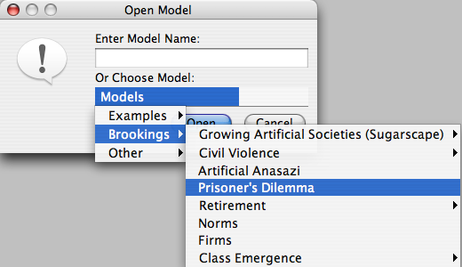
Select a model from the drop-down list and press 'open'. The selected model will begin automatically with its default parameters.
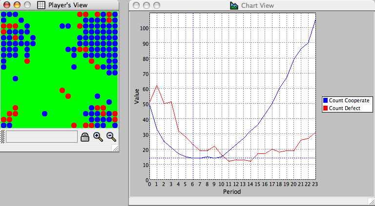
Controlling Ascape
Menu Bar
The menu bar contains the following features, shared with the control bar below:File
- OPEN MODEL: Open a new model as specified in a Java class file.
- OPEN MODEL RUN: Open a saved (serialized) model run.
- SAVE RUN: Save the current model run for later deserialization.
- CLOSE MODEL: Quit the model, but not the environment.
- QUIT: End the Ascape session.
- NEW TIMESERIES: Create a new time series.
- NEW HISTOGRAM: Create a new histogram.
- NEW PIECHART: Create a new pie chart.
- START: Begin a model run.
- RESTART: Start a model run back at the begining.
- STOP: End the current run.
- PAUSE: Pause the current run.
- RESUME: Resume a paused model run where it left off.
- STEP: Perform one iteration of the current run while the model is in a paused state.
- SETTINGS: Control the model settings ('globe' button). Display the initialization and run-time parameters. There are two tabs: Parameters and Rules.
- START RECORDING: Start recording movie of running model
- STOP RECORDING: Start recording movie of running model
- ABOUT: Display the program information ('i' button) including attributions.
Control Bar
The control bar provides an easy way to manage model execution:From right to left, the components allow one to:
- Navigate between the various chart windows.
- Display the current model iteration.
- Display the current state (Running/paused/stopped)
- Open a new model.
- Open a saved model run.
- Save the current model run.
- Quit the model.
- Restart the model.
- Pause the current run ('flag' button).
- Step through the current run when the model is in a paused state.
- Stop the current run.
- Control the model speed ('flag' slider).
- Control the model settings ('globe' button). Display the initialization and run-time parameters. There are two tabs: Parameters and Rules.
- Create movies of running model ('camera' button).
- Display the program information ('i' button)
- Create a new time series.
- Create a new histogram.
- Create a new pie chart.
Setting Parameters and Rules
Parameters
Select the 'Globe' button.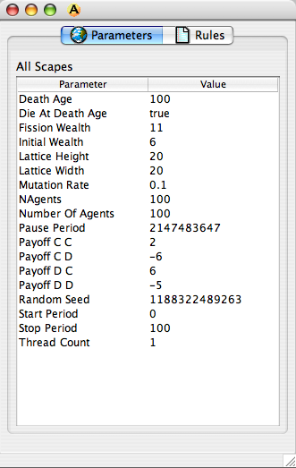
- To edit a parameter, left-click on its text field, type a value and press 'Enter'. All edits to the model are live except for those parameters that are set at initialization and so require that the model restart.
Rules
Select the Rules tab.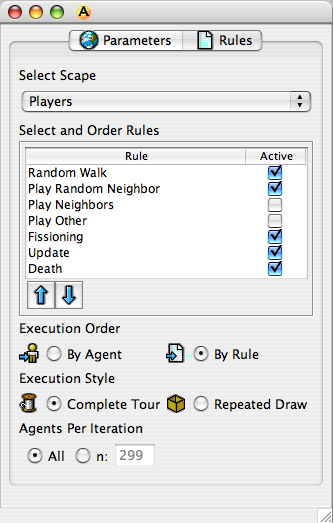
A rule is a behavior that can be iterated across any agent or group of agents. Rules can be selected, de-selected and ordered on the model dynamically.
- To change the rules, select from the drop down list the agent or group of agents for which the rules apply.
- Checking and un-checking the 'Active' box turns a rule on and off.
- Selecting a rule from the list and clicking the 'Up' and 'Down' arrow buttons can change the order of execution. This will change the order in which rules are executed upon that Scape.
- The execution order of a rule can be set to either Agent Order or Rule Order. Agent order specifies that each agent in turn has every rule executed upon it. Rule order specifies that each rule in turn be executed across all agents.
- The execution style of a rule can be set for either a complete tour or a repeated draw. A complete tour ensures that the rule is run against each agent once and only once. A repeated draw runs the rule against n randomly drawn agents, where n is set in the Agent per Iteration section. When the repeated draw is selected, there is no guarantee that each agents will be affected, or that agents will affected only once per iteration.
Inspecting Agent State
Open an Agent Inspector by alt [option] + left-clicking on a cell. Shift-alt [option] + click sets a tracking inspector that follows a particular agent around a space.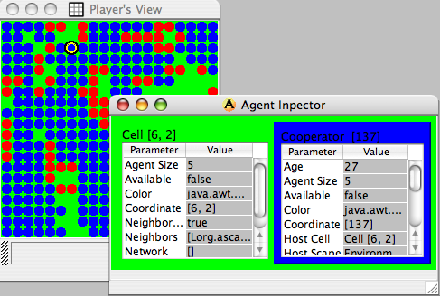
Inspectors allow the user to delve into an agent, examining and changing its values, letting the user model on-the-fly what-if scenarios, and follow a particular agent throughout the course of the run. Those fields that are gray represent those that are read-only, and cannot be changed during runtime.
Charts
Model statistics can be easily charted.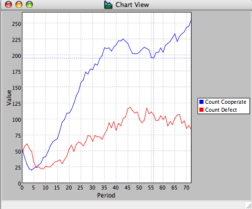
The chart above shows a time-series of the number of cooperating (Blue) and defecting (Red) agents.
Chart Settings
To create a new chart of model results using a time series, histogram, or pie chart, click on one of the three 'Chart' icons on the control bar. The following dialog appears along with a blank chart area. This dialog can be opened at any point by double-clicking on a chart.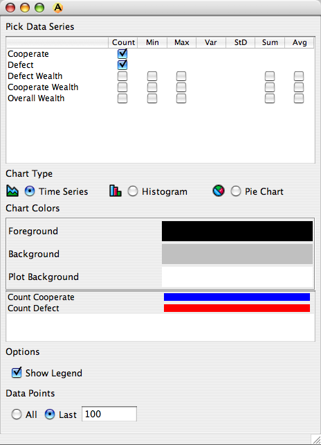
The chart settings dialog lists the model's statistics. Most of the statistics have a number of ways of being graphed. 'Count' lists the number of agents a statistics is being calculated over (i.e. a statistic run across a set of agents has a count equal to the number of agents in that set). 'Sum' returns the summation of the statistic across all of its agents. 'Min' and 'Max' are the minimum and maximum values of the statistic across its agents, respectively, and 'Var' and 'StD' are its variance and standard deviation. Select a statistic by checking the appropriate box.
Chart Properties
Right-clicking on a chart opens a pop-up menu (figure 6) that gives the option of printing and saving the chart, or adjusting its properties.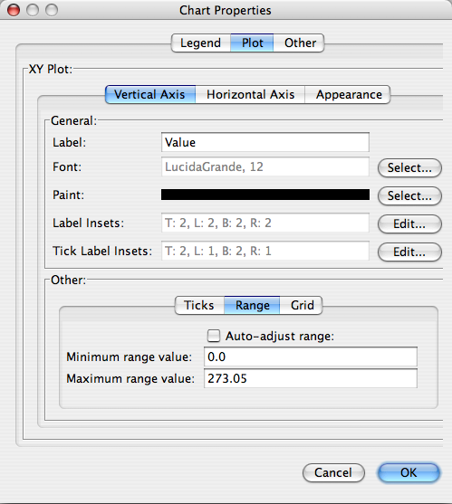
The three tabs of the Chart Properties window (figure 8) let the user make changes to background color, axis labels, and similar chart properties. Note that many chart properties are managed by Ascape, so these properties are typically best used for creating static charts of important results.
Capture Image
Clicking on the first camera icon produces a quick desktop snapshot in the launch directory.Quicktime Movies
Click on the second camera icon to begin taking a movie and follow the dialog instructions. (Due to a change in the Apple QT runtime, movies are ironically currently broken under OS X.)Analyzing Models and running Ascape with Ant
At this point, one could add the contents of the lib directory to the classpath and execute Ascape using command-line arguments as described above. But it is generally much less painful to use the included Apache ant build scripts. Ascape uses ant to support complex build and run execution support without requiring complex configuration steps.
- Download and unzip Ascape_SDK_5.m.n.zip from the downlaods site.
- Download and install ant.
- Ensure that ant is available in your executable path. See the ant documentation for more details on ant configuration.
- Open a command line environment. On Macs and Linux this is the "Terminal", on Windows "Console".
- Change to the org.ascape.all directory that you installed into. For example
cd /MyMachine/Ascape_SDK_5.m.n/org.ascape.alldir C:/MyAscapeDir/toolsAscape_SDK_5.m.n/org.ascape.all - Invoke ant run.xml by typing:
ant -f run.xml runPD
<target name="runPD" depends="run prep">
<ascape>
<scape modelClass="edu.brook.pd.PD2D">
<propertySet
displayGraphics="true"
numberOfAgents="100"
stopPeriod="100"/>
</scape>
</ascape>
</target> We specify model class and then a set of model properties, which can include model parameters as well as run control variables. For example, if we set display graphics to false, the model will run in headless mode. But we can do much more using Ant configuration. We can turn on and off scape rules, specify agent state, and even define views, which can include graphic views:
<target name="runPDConfigExample" depends="run prep">
<ascape>
<scape modelClass="edu.brook.pd.PD2D">
<propertySet numberOfAgents="100"/>
<ruleSet selectAll="false"/>
<chartView name="Defect v. Cooperate Wealth" legendShowing="false">
<windowBounds x="5" y="5" width="500" height="300"/>
<series valueName="Sum Cooperate Wealth" colorName="BLUE"/>
<series valueName="Sum Defect Wealth" colorHex="#FF0000"/>
</chartView>
<members>
<scape memberName="Players">
<ruleSet clearAll="true"
randomWalk="true"/>
</scape>
<scape memberName="Environment">
<agentView viewName="Overhead2DView">
<drawSet clearAll="true"
defaultFillAgent="true"/>
</agentView>
</scape>
</members>
</scape>
</ascape>
</target>
The above specifies that player's perform a random walk only,
and adds a chart view with a specific position and an environment
overhead view. We can also use specialized views for run control and
data output. For example:
<target name="runPDDataOut" depends="run prep">
<ascape>
<scape modelClass="edu.brook.pd.PD2D">
<propertySet
displayGraphics="false"
autoRestart="true"
stopPeriod="30"
numberOfAgents="80"/>
<dataOutputView runFile="testPDRun.txt" periodFile="testPDPeriod.txt"/>
<sweepView>
<sweepDimension parameter="deathAge" startValue="40" endValue="60" increment="10"/>
<sweepDimension parameter="fissionWealth" startValue="8" endValue="12" increment="1"/>
</sweepView>
</scape>
</ascape>
</target>
Here we specify data output that writes a line for each run's parameters to "testPDRun.txt" and a line for each model run's state to "runPDPeriod.txt". We also easily specify a parameter exploration by sweeping across death age and fission wealth.
The included ant.xml file can also be used with the Ascape jar. Just place the jar in the same directory with the ant file.
Building Ascape Models
Basics
It is not necessary to have an IDE (Integrated Development Environment) such as IntelliJ or Eclipse, but they are be an indispensable aid to the development process. While I hesitate to coerce anyone into using a specific software tool, I recommend Eclipse, as complete Eclipse projects are provided and future related work will rely heavily on the Eclipse platform. -MilesBuilding with Eclipse
Building models with Eclipse
If you are not planning to change Ascape, the simplest way to develop models is to use the Eclipse plugins. If you have any problems with this approach just use the "building Ascape itself" instructions below instead.
- Install Eclipse. We recommend Ganymede [3.4], the latest release.
- Download and unzip Ascape_Eclipse_5.m.n.zip.
- Copy the contents of the download into the "dropins" folder in your Eclipse install.
- Launch Eclipse.
- Right-click in Package Explorer and select New:Project..
- In the dialog that follows, pick "Plugin Project".
- Enter a name and click Next.
- You can deselect the plugin options on the next page and click "finish".
- In the new project, open up the MANIFEST.MF file.
- Click the Dependency tab, then the "Add.." button and select "org.ascape.ui.swing" from the long list of plugins provided. You should end up with this:
- Click Finish. Now we can build a simple Ascape model by
creating a new Scape class.
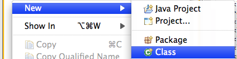
- Enter a package, a class name and
org.ascape.model.Scapeas the super class.
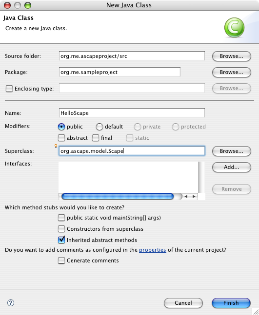
- The source file is created.
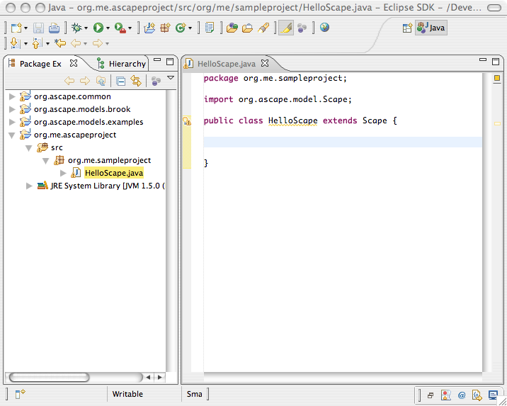
- Paste the following code into the class body.
Scape helloAgents; Scape helloGrid; public void createScape() { super.createScape(); helloGrid = new Scape(); helloGrid.setPrototypeAgent(new HostCell()); helloGrid.setSpace(new Array2DMoore()); helloGrid.setExtent(20, 20); CellOccupant helloAgent = new CellOccupant(); helloAgent.setHostScape(helloGrid); helloAgents = new Scape(); helloAgents.setPrototypeAgent(helloAgent); helloAgents.setExtent(40); add(helloGrid); add(helloAgents); helloAgents.addInitialRule(MOVE_RANDOM_LOCATION_RULE); helloAgents.addRule(RANDOM_WALK_RULE); } public void createGraphicViews() { super.createGraphicViews(); helloGrid.addView(new Overhead2DView()); } - Select Source:Organize Imports menu item to import referenced
classes.
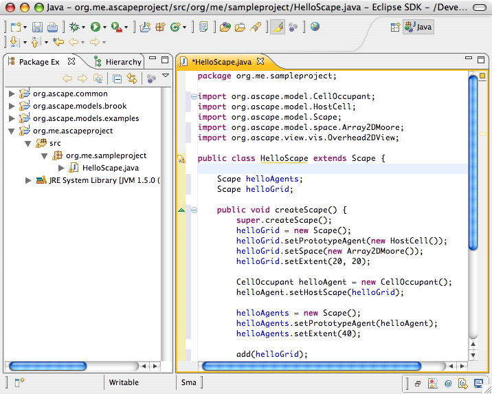
- Now that we have created our model, we can launch it by
selecting Run:Open Run Dialog. Create a new Java Application
configuration using the "add document" button at the upper-left. Ensure
that the project name is correct and set
org.ascape.runtime.swing.SwingRunneras the main class.
The screenshot below is out-of-date. Use SwingRunner, not org.ascape.model.Scape as the main class.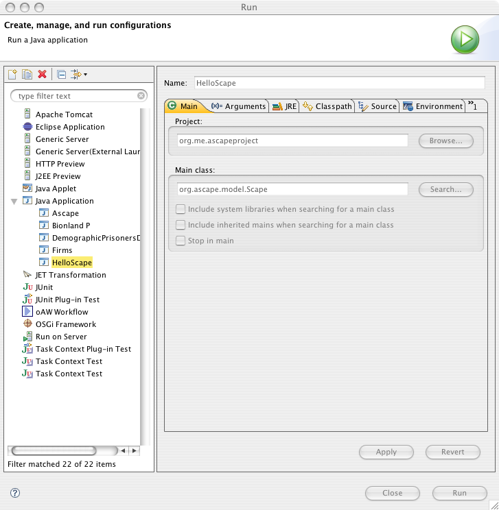
- Under the Arguments tab enter your model class name (fully
qualified!). It is also a good idea to make more memory available by
adding the obscure vm argument
-Xmx512M.
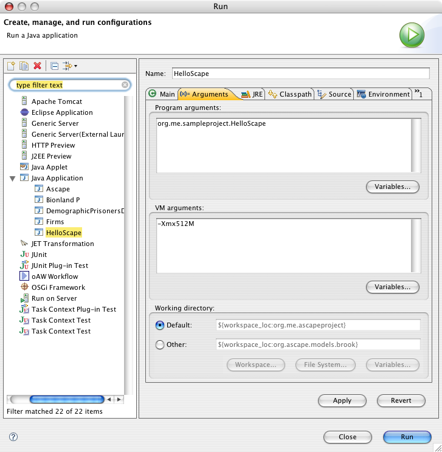
- Click Run and launch your first Ascape model!
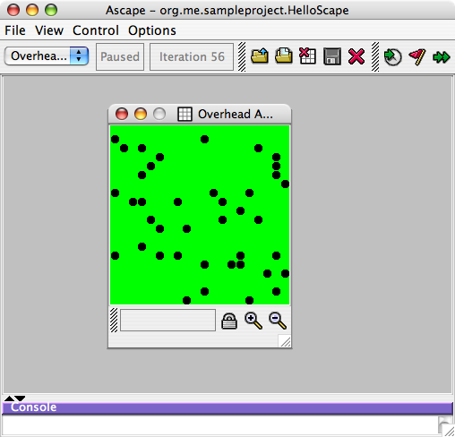
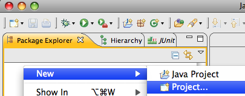
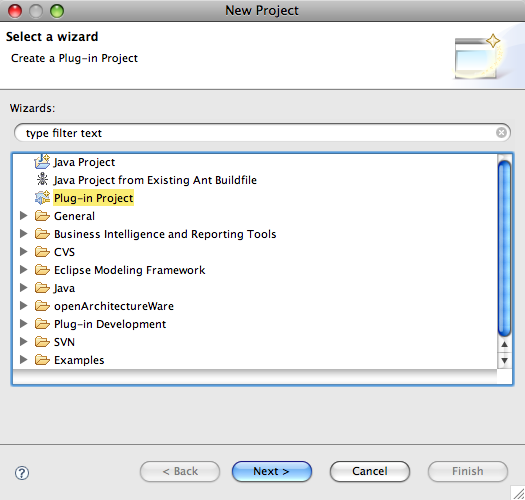
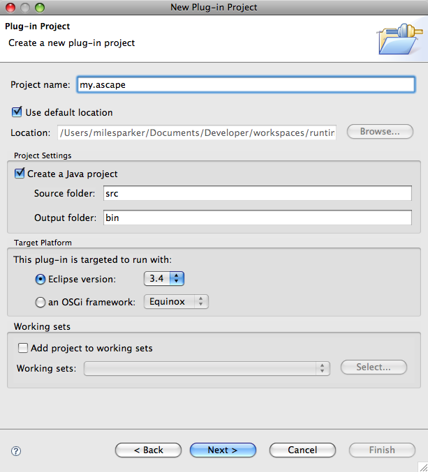

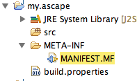
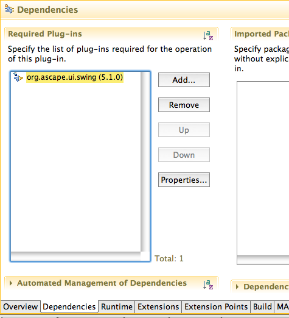
Building Ascape itself in Eclipse
- Install Eclipse.
- Download and unzip Ascape_SDK_5.m.n.zip to a convenient location.
- Launch Eclipse
- Right-click in package explorer space and select "Import".
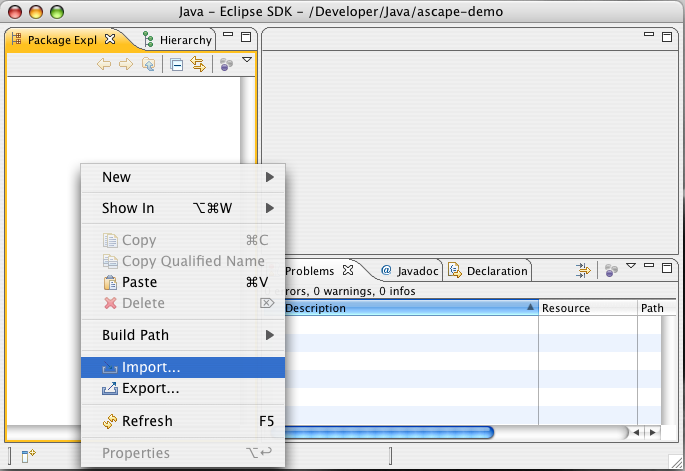
- Browse to the directory you installed and pick the following projects (at least) from the list: org.acsape.core, org.acape.common.lib, org.ascape.ui.swing. You will probably want the model projects as well.
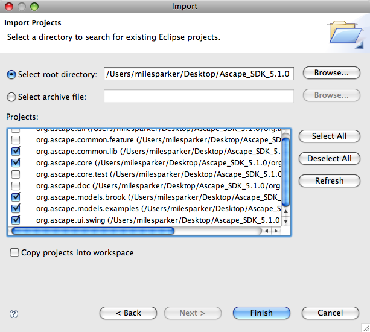
- Ascape will build automatically.
By default, Eclipse displays an imposing list of java source warning messages, almost all of which have to do with narrow Java 1.5 generics issues, and all of which can be safely ignored. These warning can be made less aggressive by selecting Eclipse:Preferences and modifying Java:Compiler:Errors/Warnings. - If you want to build a new model project, create a new Java project by right-clicking in the Package Explorer, and selecting "New:Java Project".
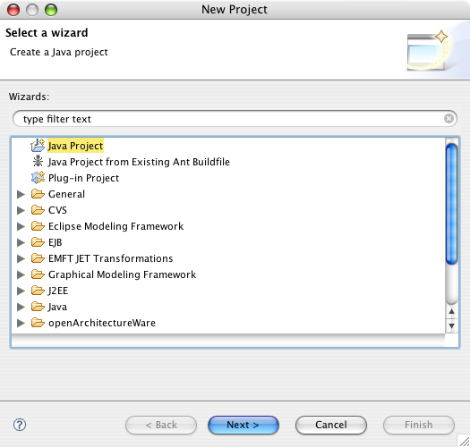
- Give the project a name and leave all of the other settings as
is.
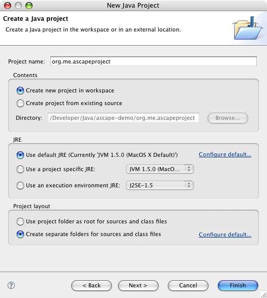
- Click Next and select the Projects tab, and click the Add
button to add the "org.ascape.ui.swing" project to the build path.
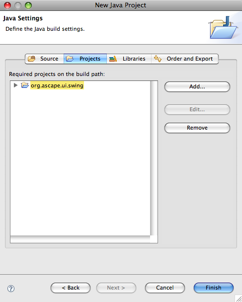
- You chould be able to continue with the instructions under building models above.
Building Eclipse using metaABM
A new option is to use the metaABM Ascape tools to create Ascape models. For more information, see the metaABM website.
Building models with another IDE
If you want to use an IDE other than Eclipse, set up should still be pretty simple. If you wish to set things up to use your IDEs build features, these are the basic steps; see you IDE documentation for more details.To build your own models:
- Create a new project.
- Add the Ascape_5.m.n.jar to your project (usually this is placed in a 'lib' directory).
- Create a source (src) directory(s) or a dependent project to manage your own model files.
- Follow the directions above to create your first model, or place that org.acape.models.brook and org.ascape.models.examples into a source directory.
- Select the IDE 'build' menu item. (In Eclipse, builds happen automatically.)
To build Ascape itself:
- Download and unzip AscapeSDK[Date].zip.
- Create a new project.
Depending on your IDE, you may want top set up separate projects for each of the included Ascape projects, or you may simply want to add all of the src and org.ascape.common.lib directories to your main project. - org.ascape.common.lib includes all dependent classes (jars) in unpacked form.
- Project dependencies are org.ascape.ui.swing -> org.ascape.core -> org.ascape.common.lib
- Add the 'src' directory(s) to your source files.
- Select the IDE 'build' menu item.
If you were using Eclipse, this would happen automatically.
Building with Ant
Prior Ascape releases supported automated building with ant. As there is now good consistent build support in Eclipse and other IDEs we are no longer using or supporting ant builds. The old scripts are available in org.ascape.all in the SDK and could be made to work with minimal modifications.Developing Models -- Where to Go from Here
One of the best ways to learn about Ascape is to simply explore and modify the wealth of existing models. Experimentation with exisiting models is one of the best ways to learn about the framework. Take a look atedu.brook.pd.PD2D for a well documented implementation
of a model in Ascape. The bionland models, while not documented, provide
a nice progression for use in a self-study tutorial. For the experienced programmer, Ascape is reasonably well documented internally. Ascape also includes extensive javadoc documentation and the source code is of course open and reasonably straightforward.
The Ascape Model Developers Manual, written by Damon Centola, and included in the documents download, provides an excellent introduction to Agent-Based Modeling in general including an introduction to many of the models featured here, and an extensive tutorial on developing Ascape models in particular. As with Ascape, the manual was never released when the authors had hoped. While I have tried to update code samples, the manual may be slightly out of date with respect to new features. -Miles
Many people will have found there way here from reading Joshua
Epstein's Generative
Social Science, which collects ground-breaking work over many years into
a single volume. For those who wish to understand these models at the
deepest level this book will be indispensable and very enjoyable.
Resources
Documentation
- This guide!
- The Ascape Model Developers Manual
Selected Papers
Here are a few select papers. Academic work employing Ascape should reference the PNAS or JASSS papers as appropriate.Subversion Version Control System
Access to the source code repository is available at:https://ascape.svn.sourceforge.net/svnroot/ascapeIf you would like to discuss contributing to Ascape, please contact Miles.
Known Issues
Because of changes in Apple QuickTime, movies may not work correctly under recent editions of Mac OS X and have not been tested under other platforms. Please let us know of your experiences with Linux and Windows.Support and Contacts
Home Page
Ascape on SourceforgeOnline Forum
Ascape requests for support and discussion should be submitted to the Ascape forums. Because of issues with spam on sourceforge, registration is required. Sourceforge ForumDownloads
Sourceforge ForumSponsors
The following organizations have provided generous in-kind support and donated IP to the Open Source community. No endorsement by any of these organizations of any other organization, product or document is intended or implied.Under no circumstances will any of the following people provide unsolicited support via direct email or phone. :)
Paid consulting and support options are available from the corporate sponsors. Otherwise please send technical questions, bug reports, etc.. to the Ascape forums.
Metascape, LLC
Metascape develops and supports innovative ABM software tools.Website: Metascape
Contact: Miles T. Parker
NuTech Solutions, Inc.
NuTech is a leader in applying ABMs to real-world industry and government problems.Website: NuTech
Contact: Contacts Page
Brookings
The Brookings Institution is a leading national policy think tank and home to the Center on Social and Economic Dynamics, where pioneering work on Agent-Based Models continues.Website: Brookings
Contact: CSED
YourKit is kindly supporting open source projects with its full-featured Java Profiler.
YourKit, LLC is creator of innovative and intelligent tools for profiling
Java and .NET applications. Take a look at YourKit's leading software products:
YourKit Java Profiler and
YourKit .NET Profiler.
Updating from Previous Versions
We have tried to preserve as much backward compatibility as possible. Still, this is a the first release in over eight years, and there have been many many changes to Ascape, so it is quite possible that some changes will be needed, especially is you have heavily customized Ascape views and scapes. To convert an existing model, try the follwingattempt to compile it with the new version of Ascape. .- The package hierarchy has changed to org.ascape from one of edu.brook, com.bios, or com.nutech. :) The easiest way to deal with this in a mdoern IDE is probably to delete all of you import statements and then use your IDE's auto-import feature (in Eclipse that is Source:Organize Imports) to attempt to find the re-packaged classes. You may have to do some of this manually.
- In 3.0 a new more flexible Scape space mechanism was
introduced. You will need to replace all patterns like:
new ScapeArray2DMooore()
with:new Scape(new Array2DMoore())
Simple, eh? - Many methods have been deprecated -- for greater flexibility
you should migrate to the replacement methods as soon as is practical.
Hopefully these will imprOve the code. For example:
CellOccupant[] neighbors; neighbors = getHostCell().getNeighboringOccupants(); for (int i = 0; i < neighbors.length; i++) { currScore = ((CoordinationGamePlayer)neighbors[i]).totalSc ore; if (currScore > bestScore) { bestScore = currScore; myColor = ((CoordinationGamePlayer)neighbors[i]).getColor(); } }List neighbors = findNeighborsOnHost(); for (Object neighbor : neighbors) { currScore = ((CoordinationGamePlayer) neighbor).totalScore; if (currScore > bestScore) { bestScore = currScore; myColor = ((CoordinationGamePlayer) neighbor).getColor(); } }And actually there is a much better way to do even that now, but we won't get into that... - The
onSetup()and similar methods are no longer used. Use thescapeSetup(ScapeEvent event)pattern instead. - Replace
Scape.addAgent()withScape.add(). - All of the Event and Listener classes have been moved to ..ascape.model.event. You may need to update your imports to reflect this if you work with listeners directly. A new class, UserEnvironment, takes over many of the functions of ViewFrameBridge. Typically you will just need to replace getViewFrameBridge() with getScape().getUserEnvironment(), or in some cases, simply UserEnvironment.
- If you run into any insurmountable difficulties, post a message to the Ascape forums so that we can sort them out.
Version History
- [5.2.0]
- Bug fixes. Factored out uneccesary lib dependencies from core. Please see Ascape bug tracker.
- [5.1.2]
- Bug fixes. Please see Ascape bug tracker.
- [5.1.1]
- Bug fixes. Please see Ascape bug tracker.
- [5.1]
- Factored out swing ui into seperate project
- Other refactorings to clean up runner functionality and user environment
- Small functional improments and bug fixes
- [5.0]
- Open Source release
- Refactorings to org.ascape hierarchy
- Eclipse projects and Integration
- Testing and additional QA
- [4.0]
- Model Navigator
- New Model Composition Features
- New UI Features
- Ant Builds
- Ant/XML Based Model and View Configuration
- 2D Performance Optimizations
- [3.0]
100s of changes; too many to mention individually. Here are some highlights:- Persistence -- Save any Model in any State
- Full MDI Interface
- Extensible Scaling Views
- Built-in Console
- Model “Acceleration”
- Scalable Time-Steps
- Deeply Polymorphic throughout all spaces
- Model Composition
- New Agent Types
- Sub and Super Scapes (Containment)
- Strong Collections Based Space Model
- Continuous 2-D Spaces
- GIS Integration
- Arbitrary Graphs
- Improved View System
- OpenMap Vis.
- Graph/Entity-Relation Views
- Inspectors in all Spaces
- Dozens of new Primary and Supporting Classes
- Massive Refactorings
- Very Strong Unit-Testing Coverage
- Many new model implementations and examples
- 100 pg Manual
- [2.0 - 2.9]
No public release. - [1.9.2]
Maintenance release:- Changed signature of getCellsNear to match findMaximum...
- Moved DrawFeature to .model to temporarily fix package dependency issue.
- [1.9.1]
Maintenance release:- Began work on clarifying role of euclidian space within Scape2D structure.
- Distance code finished.
- Get info now reflects correct version.
- Minor agent/cell inspector bug fixes.
- [1.9]
Extensive user-interface and functionality enhancements, including:- Added ability to dynamically view individual cell properties through a runtime cell and agent customizer. [This facility is very similar to Swarm and RePast agent 'probes'.] To try this feature out, simply meta [option on mac, alt on PC]click on an cell in a view. You can also drag around a view to scan the properties of different cells. If the view supports agents, agents hosted on a praticular cell will also have their characteristics displayed. To cause the customizer to 'track' agents, shift-meta/opt/alt-click in a view.
- Added sophisticated paramater sweeping support. See aa.LHVRMS
for an example.
- Added support for direct capture of views to quicktime
movies.
- Support for debug and release runtime modes, providing
support for debugging or a more 'graceful' user experience on error.
- Created multiple view functionality.
- Improved support for data output, e.g. writing data from
runnning models out to a file stream. This was allready supported, but
the implementation was confusing and spread across multiple classes.
- Seperated out the run control functionality from the
previously mentioned data output view, creating a new
"SweepControlView" that is responsible for managaing runs and setting
paramaters. Other paramater exploration controls could easily be
created using the same technique.
- Added new tabbed multi-view mode. This allows you to add
multiple views and have them automatically displayed within a tabbed
panel.
- Added 'Speed' control to control bar. This allows you to slow
a model down by delaying the contol bar's reporting of its view
update. Drag the slider to the left to slow the model.
- Added support for easy use of two-phase and calculated
statistics.
- Added navigation popup to control bar. This allows you to
easily select a particualr view frame by selecting it from the popup.
- Enhanced and cleaned up view functionality in Scapes, and
improved general scape updating and response code.
- Improvements to scape run control code.
- Suport for debug and release modes, providing clean user
level handling of bugs, while allowing bugs to remain unfiltered in
DEBUG_RUNTIME_MODE.
- All scape control events, except for the TICK event, intended
for views must now be responded to, beofre the Scape is unblocked.
This is a change in the implicit Scape/View contract, and ensures that
all views have a chance to respond properly to setup and close events.
- Some minor performance related changes.
- Fixed a bug in ScapeVector that occured when rules execute
nested multiple iterations.
- [1.6]
Interim version. (No official release). - [1.5.1]
Mostly small fixes and refactoring.- Added ability to easily create calculated statistics. These statisitics can be used for summary or derivitive stat calculations.
- Fixed problem with inital stat calculation.
- Cleaned up stat calculation, initialization and running code and rules.
- Many changes to ViewFrameBridge and related code to clarify and better support creation of web deployment package.
- [1.5]
Many important and minor changes, including, but not limited to:- Ascape is no longer a 'technical release' and can be considered a full release. While there are many important features to add, it is now essentially feature complete.
- Created standard 'open' dialog functionality with easily accessible standard models..can now invoke Scape directly from command-line.
- Many important model behaviors, including rules selection and execution order and style, are now accessible at run time and can be modified through the model 'settings' customizer. Click on the globe button in the toolbar to check this feature out.
- Implemented rule execution through an iterator pattern, so that new scape topologies can be created simply by providing an iterator, and the execution order can be safely and consistently maintained in one place (ScapeGraph).
- Changed the names for execution order from the confusing (because of association with parallel processing) "Parallel/Serial" to "Rule Order/Agent Order". Added repeated draw functionality, and moved it from execution order to a new property, 'execution style.
- Now deploying though InstallAnywhere installer.
- Added an 'about' dialog feature that makes it possbile to easily create custom about dialogs for your models. You can now provide about information for your model by simply creating a MyModel.html file and placing it in the appropriate place in your model hierarchy. You can include html tags and references in this file.
- Added modest user exception alerting.
- Went back to original contruction naming scheme; populate is know called createScape. Note that I did not go back to using a seperate createRules method..seems unneccesary, esp. since rule 'availibility' and selection are now seperate issues.
- [1.3]
No public release..all changes became part of 1.5. - [1.2.5a]
Just a couple of deployment related fixes, and a minor fix for a problem that was causing models to stop when swtiching between chart types in the chart customizer. - [1.2.5]
A number of relatively minor changes, bug fixes, and enhancements, as well as new models. The most significant change is the addition of support for using images (GIFs) to represent cells in views. This feature will be used more in future release. This release also includes an implementation of heatbugs that should be familiar to Swarm users. - [1.2]
- I've finally made a change that I wanted to make at almost the moment I designed the initial framework. I've changed the names of engine and observe to model and view to more explicitly reflect the overall design pattern behind them, and also because I think they are more appropriate names.
- Many rules classes have become anonymous inner class instance members of Agent or Scape.
- Changed the implementation of a number of "feature" type classes so that they can be implemented as inner and anonymous classes more easily. These include DrawFeature@, ColorFeature@, UnitIntervaldataSource@, and StatCollector@.
- Changed stat collection mechanism to allow for non-automatic collection of stats. (Partially implmented earlier.) Made StatCollector.getValue non-abstract, neccessitated by non auto collection. Again, added support for name and auto collect member variables so that it it no longer neccesary to override these methods.
- Added support for custom sliders and live model changes.
- Copied many random functions to Ascape objects, using random seed, so that common random functions are accessible to all objects without having to go through Utility.
- Provided access to the random seed used for the running model, even if the seed was set arbitraily (using system time).
- Added an abstraction for data series that provides a way of customizing any aspect of a data series view. In the initial case, it allows one to set wheteher data should be represeneted as continuous (a curve) or discrete (points).
- Implemented all the 'settings' style frames as customizer panels.
- I'm considering removing the nested drawing feature from DrawFeature, since I haven't really found a use for it. Let me know if you find it useful.
- Created jar files and changed the distribution's directory structure to better conform to standard practice.
- Added a standard out view which manages printing model information to the console. (You can disable this by calling getRoot().removeScapeListener(getStandardOutView());.
- Fixed many bugs, and added may minor features.
- [1.1.2]
- Abstracted frames and created view manager, providing simpler support for different viewing environments, and for deploying simple applets. (See appletsupport folder).
- Fixed a bug in ScapeArray2D causing incorrect execution of random rules in parallel.
- [1.1.1]
- Truly random rule execution for 2D lattices (previously only supported for occupants).
- Expanded api for finding cells, etc..
- Standard methods for view updates.
- Many fixes to find cells etc..
- Limited support for internal frames. (Broken in Win95).
- Many other minor improvements.
- [1.1]
- There are significant enhancements this time, including:
- The ability to assign set period values (from a historical record, for example) to agents.
- Data collection methods and views.
- "Pluggable" drawing features, including the ability to change them at runtime from a user dialog.
- Automatic discovery of model paramaters at runtime, allowing their modifcation in a running model through user customizers, or using command line paramaters.
- New models.